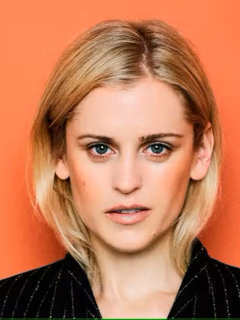

Information:
The Witcher 3: Wild Hunt
9.67
Rank:
#9
Popularity:
#56
Players:
40,213,562
Description:
The Witcher 3: Wild Hunt is an action role-playing game with a third-person perspective. Players control Geralt of Rivia, a monster slayer known as a Witcher. Geralt walks, runs, rolls and dodges, and (for the first time in the series) jumps, climbs and swims. He has a variety of weapons, including bombs, a crossbow and two swords (one steel and one silver). The steel sword is used primarily to kill humans while the silver sword is more effective against creatures and monsters. Players can draw out, switch and sheathe their swords at will. There are two modes of melee attack; light attacks are fast but weak, and heavy attacks are slow but strong. Players can block and counter enemy attacks with their swords. Swords have limited endurance and require regular repair. In addition to physical attacks, Geralt has five magical signs at his disposal: Aard, Axii, Igni, Yrden and Quen. Aard prompts Geralt to unleash a telekinetic blast, Axii confuses enemies, Igni burns them, Yrden slows them down and Quen offers players a temporary, protective shield. The signs use stamina, and cannot be used indefinitely. Players can use mutagens to increase Geralt's magic power. Geralt loses health when attacked by enemies, although wearing armour can help reduce health loss. Health is restored with meditation or consumables, such as food and potions. Players occasionally control Ciri, Geralt's adoptive daughter who can teleport short distances.
Main characters:
Geralt of Rivia
Doug Cockle
Ciri
Jo Wyatt
Yennefer
Denise Gough
Triss
Jaimi Barbakoff
Dandelion
John Schwab
Vesemir
William Roberts